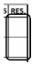
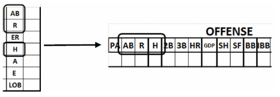
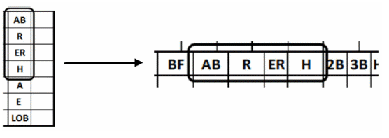
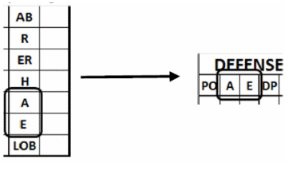
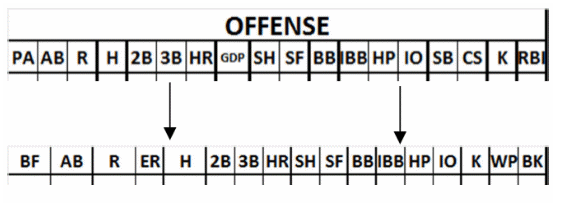
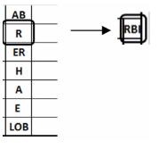
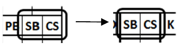
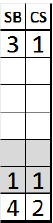
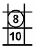
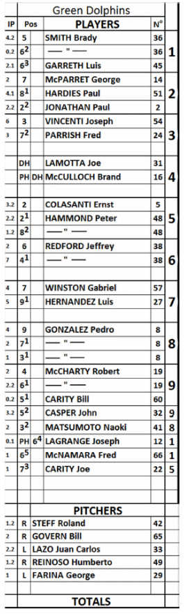

After completing the score-sheet it is necessary to perform some validation operations for the entire report, by executing, in order, the following operations:
C heck that the finish time and duration of the game have been entered.
C 
Check that the totals recorded in the lower part of the final inning correspond with the offense totals of the same team, and the pitchers and fielders of the opposing team. In particular:
Times At Bat (AB), runs scored (R) and hits (H) must correspond to the offensive totals of the same team;

Times At Bat (AB), runs scored (R), earned runs (ER) and hits (H)must tally with the pitching totals of the opposing team.

Assists (A) and errors (E) must tally with the defense totals of the opposing team.

Check that the offense data totals that correspond to the pitching data of the opposing team are the same.

Check the data that do not have any counterpart on the other sheet:
G rounded into Double Play (GDP): check that double plays are entered in the defense statistics of the opposing team, and that the player really did hit into a double play. The number of GDPs must always be equal to or less than the number of Double Plays credited to the opposing team. If it is more it means that there is a play like e.g. GDP 6E3.
R 
Wild pitches (WP) and balks (BK) by the pitchers, and passed balls(PB) by the catchers must be checked visually against the central section of the opposing team’s score-sheet.
C 
C 
Check whether there were any runs earned against the pitcher(s) but not against the team. If so, write the team total in a circle above the total runs earned against the pitcher(s).
F 
Check that the total number of putouts (PO) recorded in the defense statistics matches the number of innings played, multiplied by three. Each fraction of an inning is equivalent to an out; accordingly, if the number of innings played was 8.2, putouts must be 26 (8 x 3 + 2).
In games where there are many changes and substitutions, it is a good idea in every case to check the allocation of innings played for each defensive role, and for each position in the lineup.
Below are some examples of the kinds of checks that must be made:
 |
Position or defensive role
Pitcher (1.2 +
2 + 2.2 + 1.2 + 1) = 9 Positions in batting order
1st
(4.2
+ 0.2 + 2.1 + 1.1) = 9
|
NB: The Designated Hitter (DH), the Pinch Hitter (PH) and the Pinch Runner (PR) do not play in defense and these players are therefore not credited with any Innings Played (IP).
A check of the innings played for each individual position in the batting order might not come out exactly when the role of Designated Hitter is terminated during the course of a game. In this case, the innings played by each individual defensive position will tally, but they will not match up with the batting order where the Designated Hitter appears.